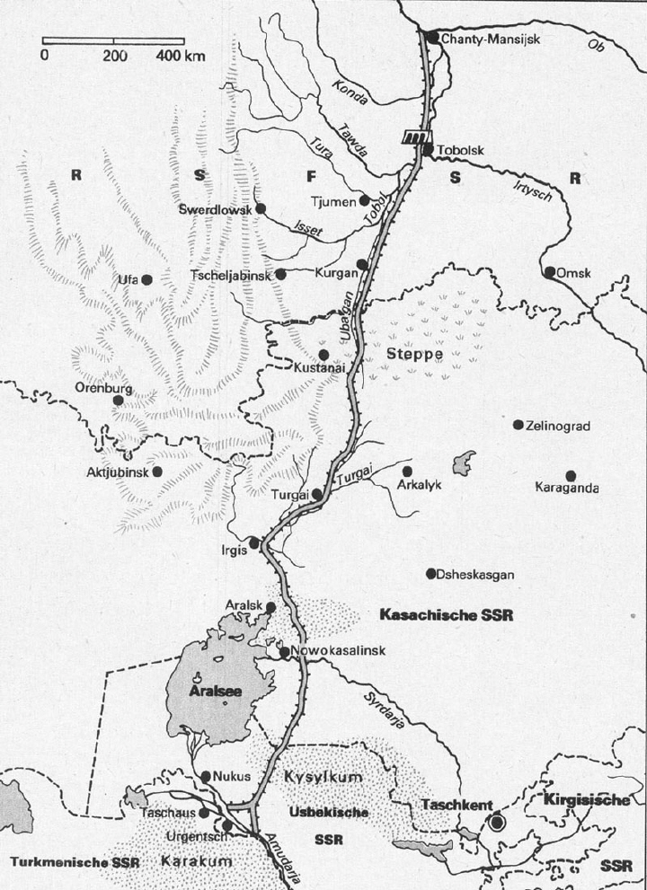

The russian water engineers said that there was no problem at all. They thought it would be easy to just switch the downstream of Irtis, Isim, Pechora and Tobol, build a 2500km long canal on the steppe, and after that, fill Aral with the Ob river's water.
They wanted everything to be done quickly, so they whished for the terrain rearrangement to be done by nuclear explosions. In March 1971 they made the first 15 kiloton explosion near Vasjukovo happen. It resulted in a 750 meter big crater and a very strong nuclear pollution. In 1975, because the National Nuclear Power Agency wanted so, the other 250 planned explosions were suspended. The situaton stayed like that until 1986, where they officially stopped the construction (today's estimate says, it would cost 40 billion USD to build the canal).
At that point, the Mo'ynoq port was not used for 6 years. The stranded fishing boats were left there and the majority of the population emigrated. Today, the former fishing port is 150km away from the puddle that is left behind from the Aral sea.
